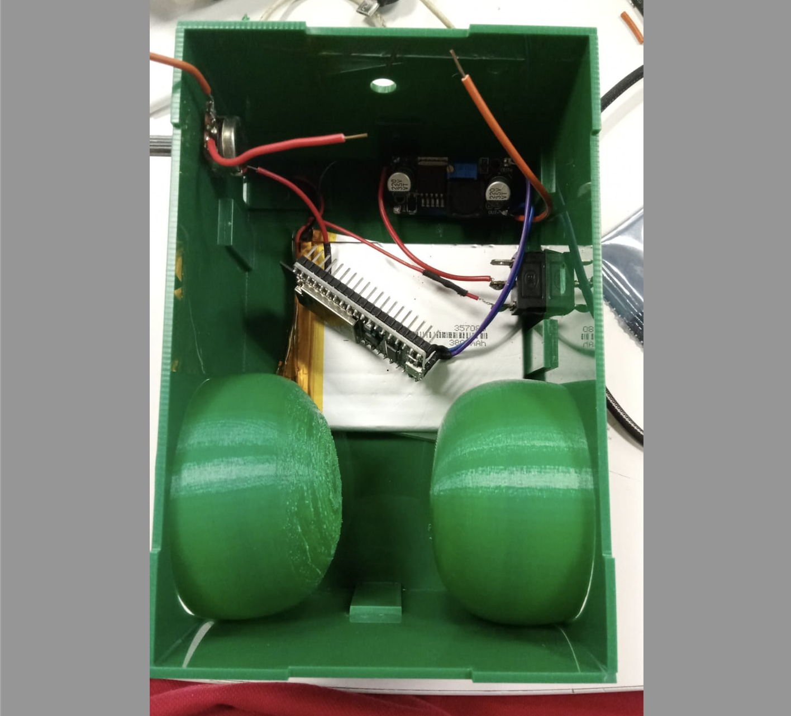
Radio Aburrá
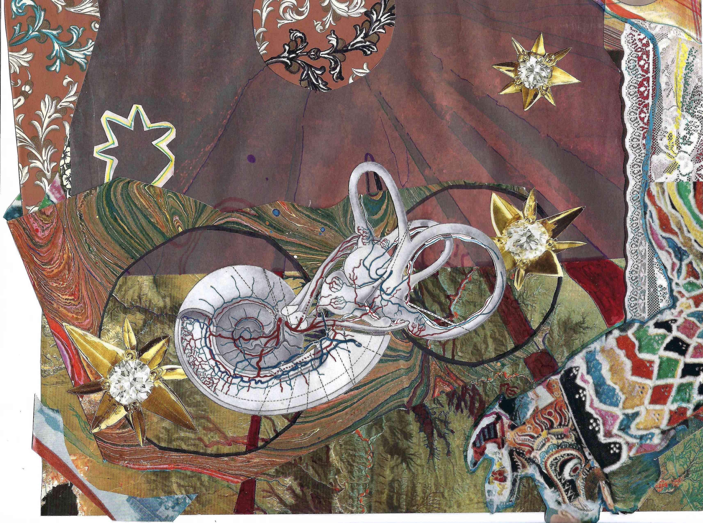
El ruido y la separación
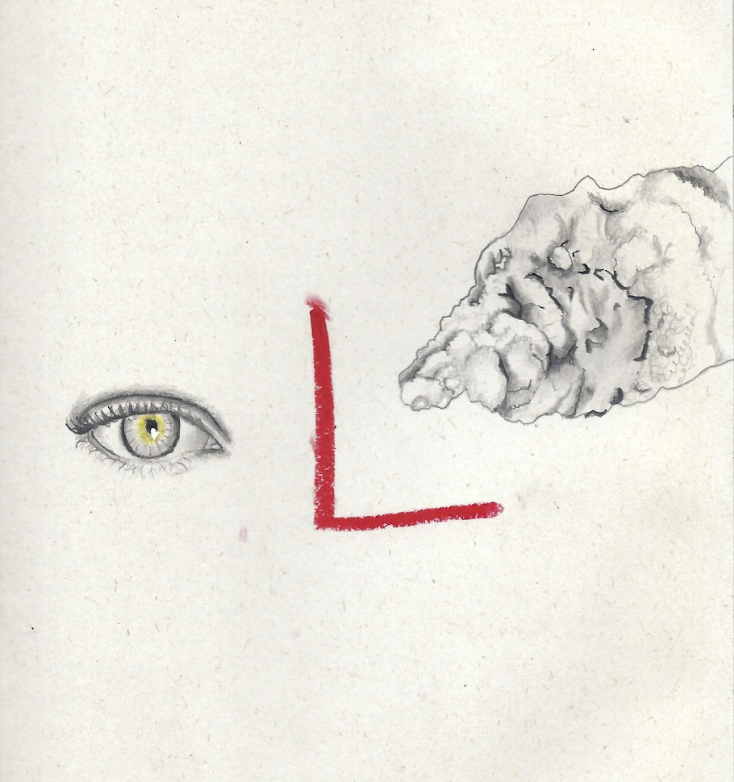
Monumento
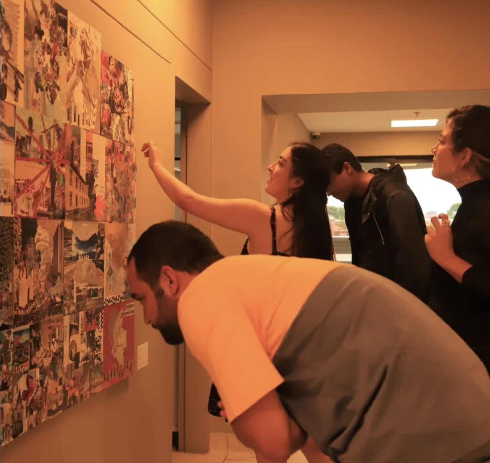
Collage
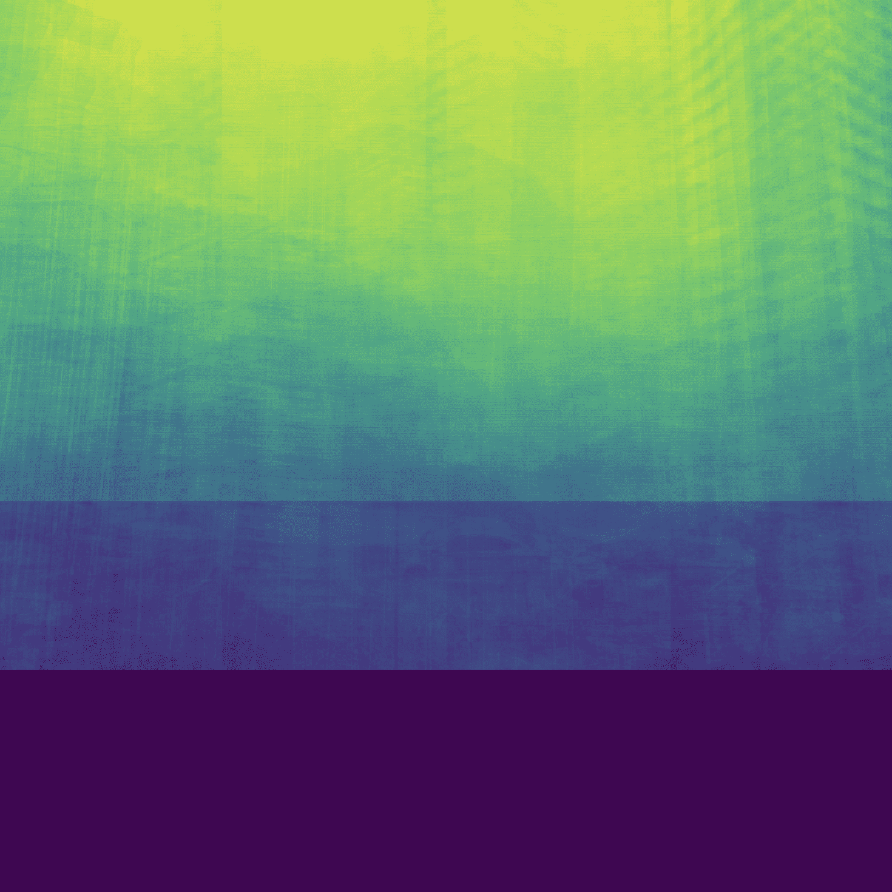
Data collage

PhotographyFotografía

Sympoietic art organismSympoietic art organism

A collage about death
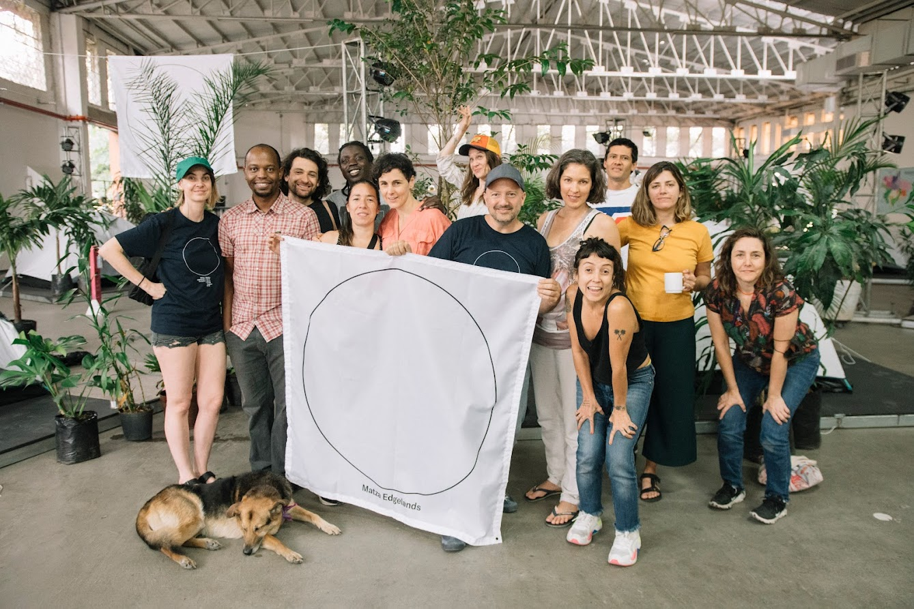
MATZA × Edgelands

Edgelands — Reports & ResearchEdgelands — Informes e investigación
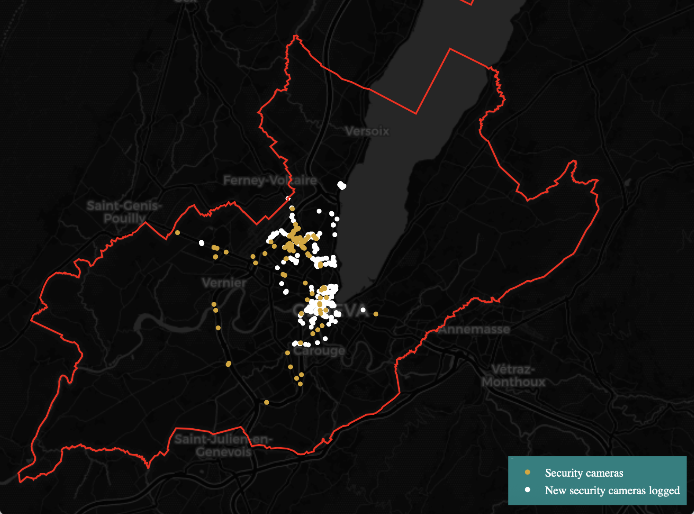
Dropping the Pin on Surveillance
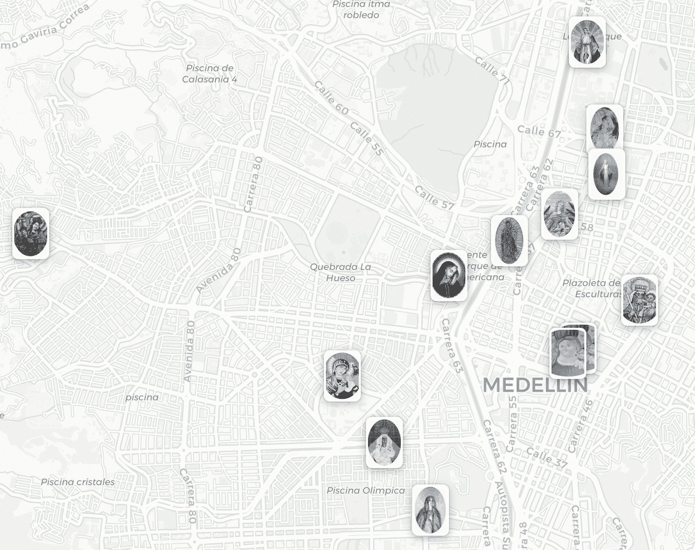
Las Vírgenes del Metro
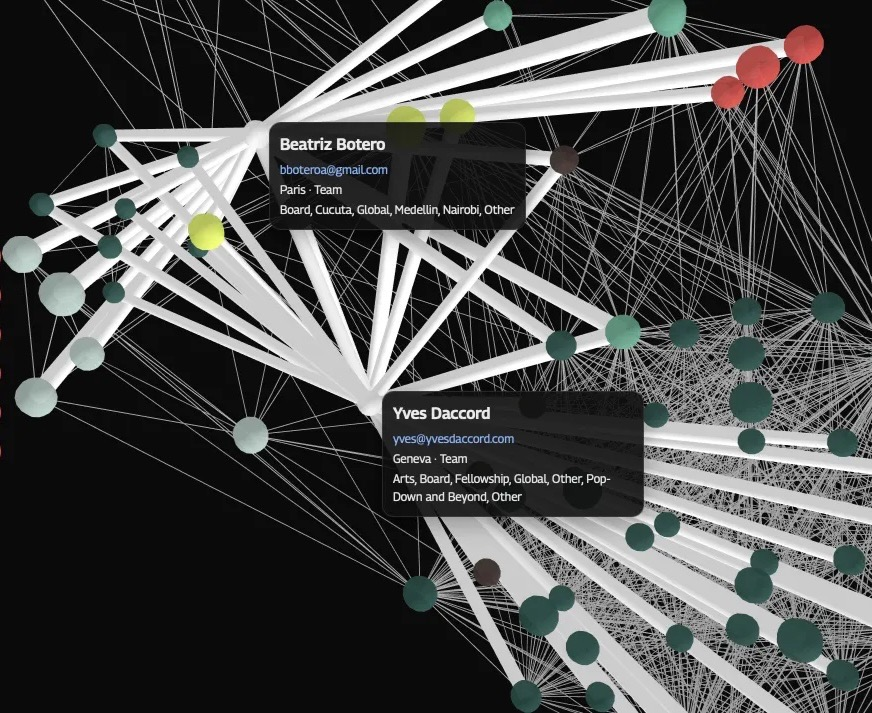
Edgelands Network Visualization
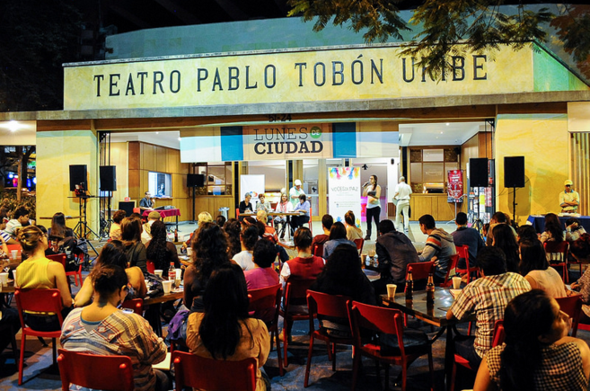
Cities & Civic PracticeCiudades y práctica cívica

Shape Compactness of Urban FootprintsCompacidad de huellas urbanas
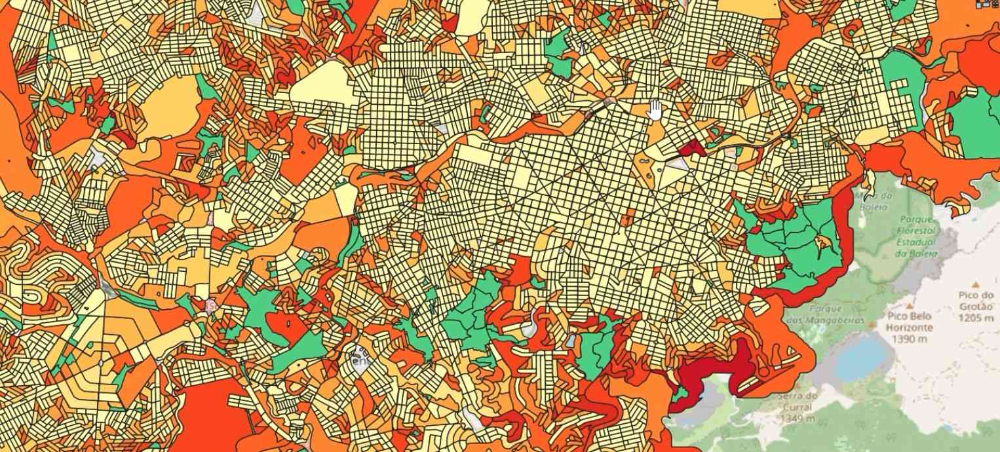
Urban Regularity IndexÍndice de regularidad urbana
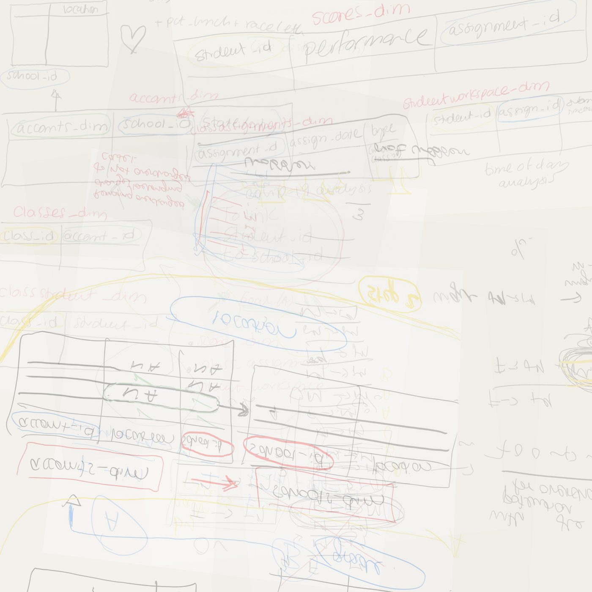
NYU Marron / Litmus
The work moves between signal and noise
El trabajo se mueve entre señal y ruido
Sara Arango Franco is an artist-researcher based in Medellín, Colombia. Her work makes invisible urban systems visible — through data, devices, writing, and perception. Trained as a mathematical engineer (EAFIT) and urban scientist (NYU), she has worked with the World Bank, WRI, and the Edgelands Institute, and participated in the Complex Systems Summer School at the Santa Fe Institute.
Sara Arango Franco es una artista-investigadora basada en Medellín, Colombia. Su trabajo hace visibles los sistemas urbanos invisibles — a través de datos, dispositivos, escritura y el cuerpo.
Her practice, Ruido y Señal, threads through Radio Aburrá, Monumento, a forthcoming Routledge chapter on the algorithm as spiritual force, and thirteen years of Lunes de Ciudad. She is working toward a book that uses noise as a lens for territory, algorithms, grief, extortion, birdsong, and the commons.
Su práctica, Ruido y Señal, atraviesa Radio Aburrá, Monumento, un capítulo en Routledge sobre el algoritmo como fuerza espiritual, y trece años de Lunes de Ciudad. Trabaja en un libro que usa el ruido como lente para el territorio, los algoritmos, el duelo, la extorsión, el canto de los pájaros y los comunes.
Let's talk
Hablemos